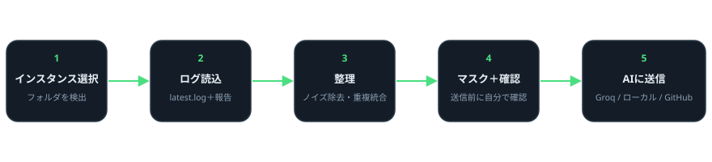

3AIプロバイダー
14,000既定の文字数上限
3vanilla / Forge / Fabric 形式に対応
0追加ライブラリ（Qt Widgets + Network のみ）
仕組み

特長
🧹
整理してから送信
DEBUG と既知のノイズを除去し、重複は (×N) に統合、長いスタックは折りたたみ。トークンも節約でき、要点が伝わります。
🔒
既定でプライバシー保護
ユーザーディレクトリ、accessToken、プレイヤー名、UUID、IP:Port をマスク。送信前に全体をプレビューできます。
🧠
3つのAIルート
クラウドの Groq、完全オフラインの llama.cpp、GitHub PAT で使う GitHub Models から選べます。
📄
latest.log だけではない
最新の crash-reports と hs_err_pid ネイティブクラッシュログも抽出。メインスタックと疑わしい Mod も含みます。